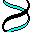

 DNAPARS. Estimates phylogenies by the parsimony method using nucleic acid sequences. Allows use the full IUB ambiguity codes, and estimates ancestral nucleotide states. Gaps treated as a fifth nucleotide state. It can also fo transversion parsimony. Can cope with multifurcations, reconstruct ancestral states, use 0/1 character weights, and infer branch lengths.
DNAMOVE. Interactive construction of phylogenies from nucleic acid sequences, with their evaluation by parsimony and compatibility and the display of reconstructed ancestral bases. This can be used to find parsimony or compatibility estimates by hand.
DNAPENNY. Finds all most parsimonious phylogenies for nucleic acid sequences by branch-and-bound search. This may not be practical (depending on the data) for more than 10 or 11 species.
DNACOMP. Estimates phylogenies from nucleic acid sequence data using the compatibility criterion, which searches for the largest number of sites which could have all states (nucleotides) uniquely evolved on the same tree. Compatibility is particularly appropriate when sites vary greatly in their rates of evolution, but we do not know in advance which are the less reliable ones.
DNAINVAR. For nucleic acid sequence data on four species, computes Lake's and Cavender's phylogenetic invariants, which test alternative tree topologies. The program also tabulates the frequencies of occurrence of the different nucleotide patterns. Lake's invariants are the method which he calls "evolutionary parsimony".
DNAML. Estimates phylogenies from nucleotide sequences by maximum likelihood. The model employed allows for unequal expected frequencies of the four nucleotides, for unequal rates of transitions and transversions, and for different (prespecified) rates of change in different categories of sites, and also use of a Hidden Markov model of rates, with the program inferring which sites have which rates. This also allows gamma-distribution and gamma-plus-invariant sites distributions of rates across sites.
DNAMLK. Same as DNAML but assumes a molecular clock. The use of the two programs together permits a likelihood ratio test of the molecular clock hypothesis to be made.
DNADIST. Computes four different distances between species from nucleic acid sequences. The distances can then be used in the distance matrix programs. (See the Distance Matrix programs pages for information on them). The distances are the Jukes-Cantor formula, one based on Kimura's 2- parameter method, the F84 model used in DNAML, and the LogDet distance. The distances can also be corrected for gamma-distributed and gamma-plus-invariant-sites-distributed rates of change in different sites. Rates of evolution can vary among sites either in a prespecified way, or according to a Hidden Markov model. The program can also make a table of percentage similarity among sequences.
 SEQBOOT.
Reads in a data set, and produces multiple data sets from
it by bootstrap resampling. Since most programs in the current version of
the package allow processing of multiple data sets, this can be used
together with the consensus tree program CONSENSE to do bootstrap (or
delete-half-jackknife) analyses with most of the methods in this package.
This program also allows the Archie/Faith technique of permutation of
species within characters. It can also rewrite a data set to convert
it from between the PHYLIP Interleaved and Sequential forms, and into
a preliminary version of a new XML sequence alignment format
which is under development and which is described in the
SEQBOOT documentation web page.
SEQBOOT.
Reads in a data set, and produces multiple data sets from
it by bootstrap resampling. Since most programs in the current version of
the package allow processing of multiple data sets, this can be used
together with the consensus tree program CONSENSE to do bootstrap (or
delete-half-jackknife) analyses with most of the methods in this package.
This program also allows the Archie/Faith technique of permutation of
species within characters. It can also rewrite a data set to convert
it from between the PHYLIP Interleaved and Sequential forms, and into
a preliminary version of a new XML sequence alignment format
which is under development and which is described in the
SEQBOOT documentation web page.
 CONSENSE.
Computes consensus trees by the majority-rule consensus tree
method, which also allows one to easily find the strict consensus tree.
Is not able to compute the Adams consensus tree. Trees are input in a tree
file in standard nested-parenthesis notation, which is produced by many of
the tree estimation programs in the package. This program can be used as
the final step in doing bootstrap analyses for many of the methods in the
package.
CONSENSE.
Computes consensus trees by the majority-rule consensus tree
method, which also allows one to easily find the strict consensus tree.
Is not able to compute the Adams consensus tree. Trees are input in a tree
file in standard nested-parenthesis notation, which is produced by many of
the tree estimation programs in the package. This program can be used as
the final step in doing bootstrap analyses for many of the methods in the
package.